Start with the physics.
First principles make the strongest design constraints—and the most useful tradeoffs.
Mechanical engineering · Mechatronics · Robotics
I bring ambitious physical products from first principle to test-ready reality—where mechanical detail, electrical integration, and relentless iteration meet.
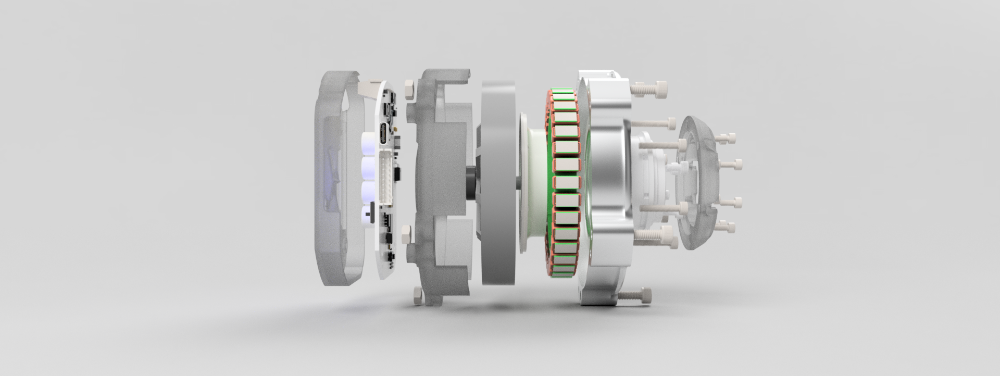
Great hardware is never just a collection of parts. It is a clear response to constraints: mass, heat, manufacturability, safety, cost, and the reality of the person who has to build it.
I work comfortably across those boundaries, turning complex requirements into physical systems that are practical to prototype, validate, and scale.
How I work ↓First principles make the strongest design constraints—and the most useful tradeoffs.
Every test should resolve a question, reduce risk, or sharpen the next decision.
Mechanical, electrical, and software interfaces are where meaningful products take shape.
A sample of the systems and questions that keep me building.
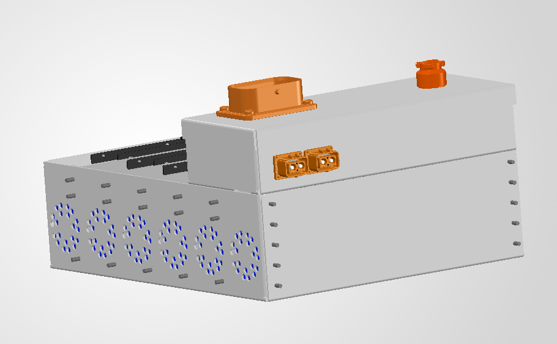
PROJECT 01 / NORTHWESTERN FORMULA RACING
I designed the current car's tractive-system enclosure around Formula Student compliance, air cooling, electronics routing, and fastener strength under foreseeable failure modes.
See the development work ↓PROJECT 02 / KINETIC ROBOTICS
Founder and product manager for an 85 mm-class robotic actuator with FOC control, built to make capable actuation more accessible to builders and researchers. Presented at Northwestern The Garage’s Jumpstart Demo Day.
Discuss this project ↗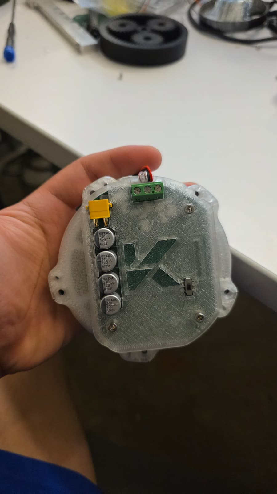
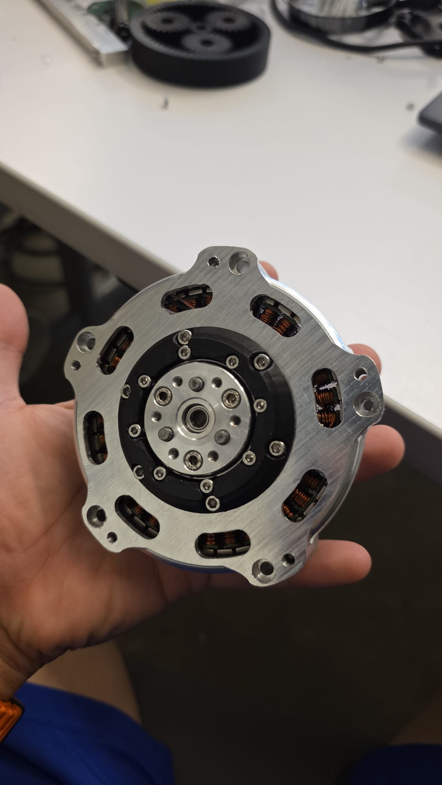
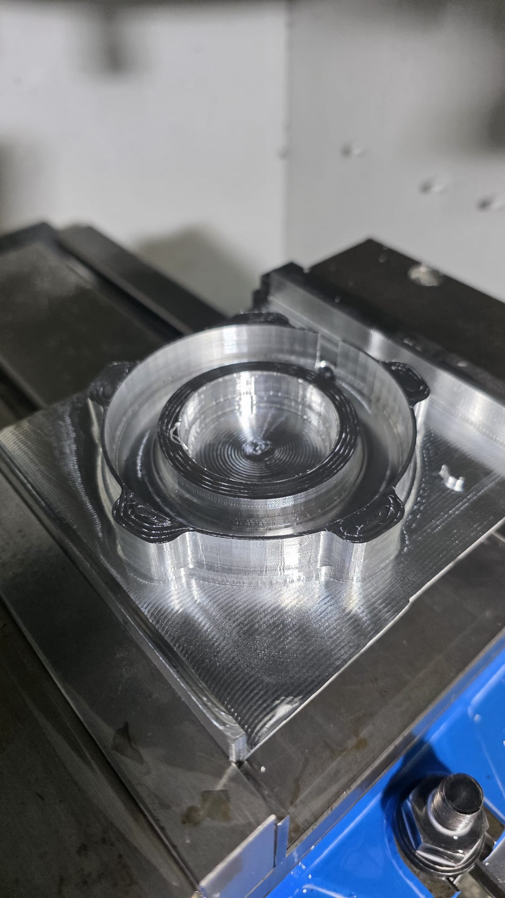
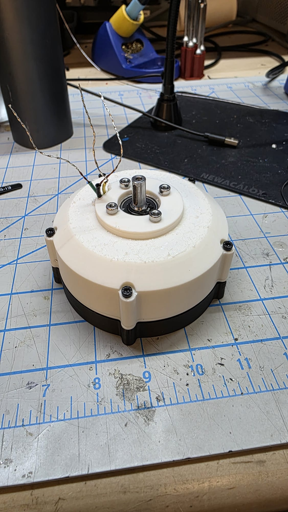
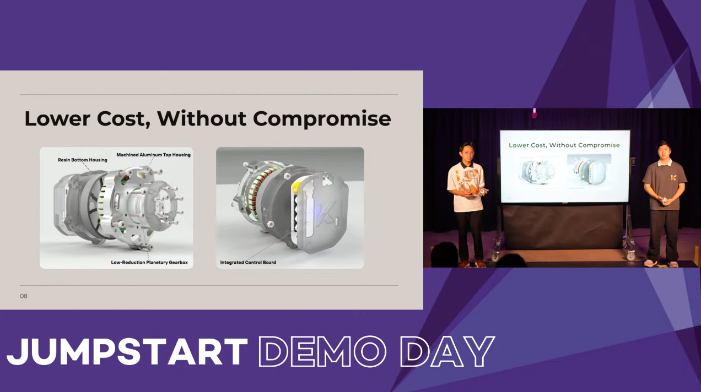
PRESENTATION / NORTHWESTERN THE GARAGE
Shared the Myo-20’s design approach and the case for accessible, capable robotic actuation.
FORMULA DETAIL / ACTIVE DEVELOPMENT
Designed the enclosure for the current tractive battery system, balancing vehicle packaging, cooling, safety, and serviceability while the program is still in active development.
See the analysis ↓PROJECT 03 / ACADEMIC BUILD
A team-built, electromagnetically powered launcher developed as a focused exercise in experimental hardware, power delivery, and iteration.
Ask about the project ↗03 Field notes
Formula Racing has taught me to explain enclosure, cooling, routing, and fastener decisions clearly, then improve them with the team.
Raising more than $10,000 and speaking with biomechanics labs changed how I think about tolerance stackups, unit cost, and user experience.
Building a working fusor with two teammates taught me the practical realities of sealing, high-voltage insulation, and electricity in a vacuum.
Early-stage work on the tractive system pairs packaging studies with thermal and pressure analysis to inform the next design decision.
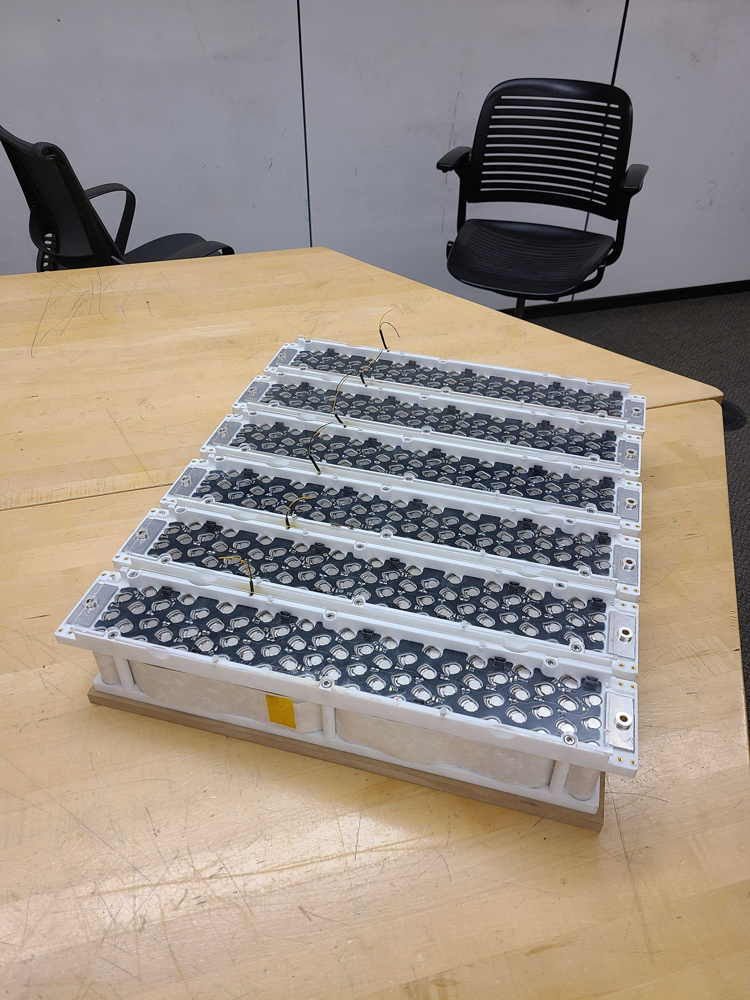
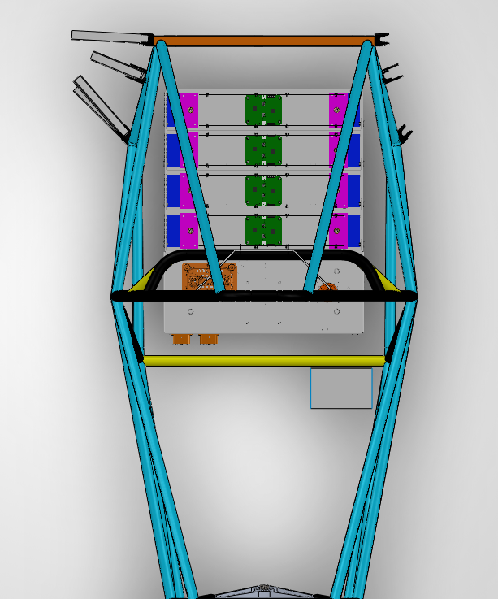
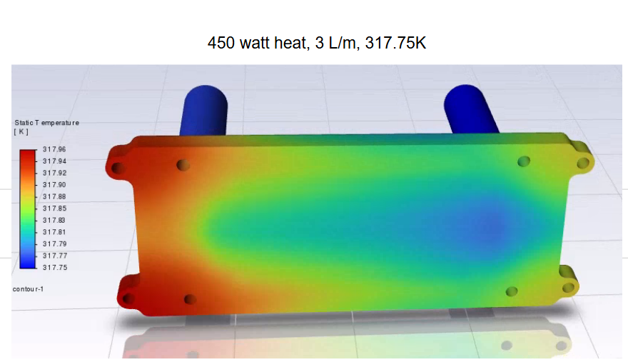
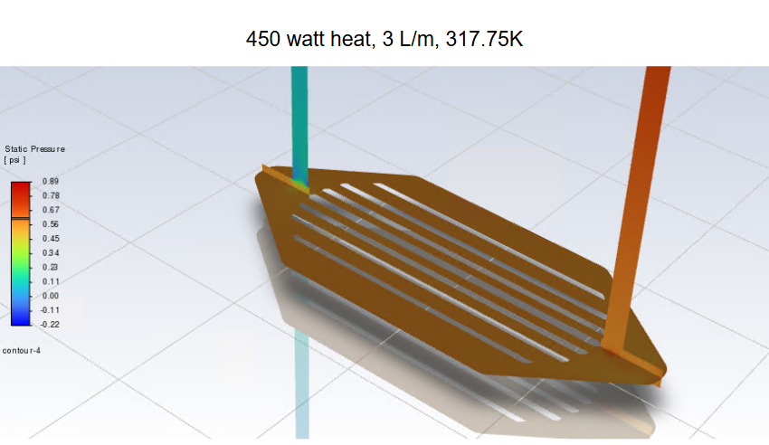
Tractive-system work is ongoing. Images shown represent active development—not a final released design.
From mobility and aerospace to robotics and energy, I’m drawn to teams solving difficult problems with real-world consequences.
Selected experience
Requirements, constraints, and interfaces made concrete.
CAD, mechanisms, assemblies, and detailed drawings.
Manufacturing, serviceability, reliability, and cost.
Hardware interfaces that support the complete machine.
Evidence-led iteration from bench to integrated system.
Open to consequential work
I’m interested in conversations with teams creating the next generation of transportation, aerospace, energy, and robotic systems.
Get in touch ↗Availability Internships: January through early September